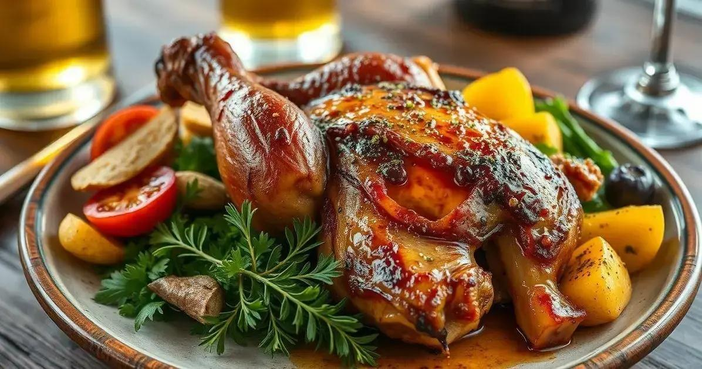

Aves · Frango
Frango assado com cerveja

Ingredientes
- 1 frango (cerca de 1,8 kg) limpo e cortado em pedaços pelas juntas
- Sal e pimenta-do-reino a gosto
- 5 dentes de alho descascados e amassados
- 1 cebola grande picada
- 4 folhas de louro
- 2 latas de cerveja
Modo de preparo
- Preaqueça o forno em temperatura alta (200 °C).
- Tempere os pedaços de frango com sal, pimenta-do-reino e alho. Coloque-os numa assadeira.
- Junte a cebola e as folhas de louro. Despeje a cerveja por cima do frango.
- Leve ao forno preaquecido e asse até o frango dourar e ficar macio (cerca de 1 hora e 40 minutos), banhando de vez em quando com o caldo da assadeira. Retire do forno, deixe esfriar e congele.
Observação
Pode dividir o frango em porções separadas para congelar. Congelamento: coloque o frango com o molho em embalagem de papel-alumínio, ponha num saco plástico, retire o ar e feche hermeticamente; etiquete e congele. Descongelamento: descongele na geladeira de um dia para o outro; cubra com papel-alumínio e leve ao forno para aquecer.